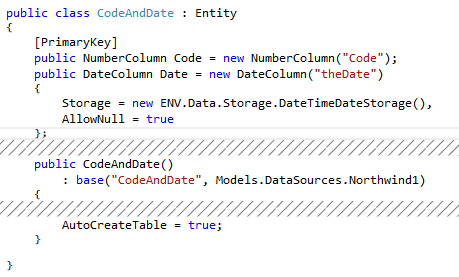

Using DateTime columns with Null
Using a DateTime column in an SQL table is quite common. Using it in .Net has one limitation – DateTime cannot be null as it is a struct and not a class.

You can read more about it here
First, lets define a table with a DateTime column:

In case you had a Time column coupled to a Date column in the original code, it will look like this in the migrated code:

There are better solutions than this.
Use an alternative value
This way you can determine what would be the value shown to the user / saved to the DB when a Null value is used.
This solution involves:
- Using the Firefly.Box.Date.DateTimeColumn – allowing you to have one column with both the date and time.
- Determining what would be the Null value when reading from the DB columns / writing to the DB column.
- Creating your own storage and using it in the column.
The result would look like this:

Use a custom column
This way you can create your own column, based on your preferences.
This solution involves:
- Using a tweaked DateTime struct called “DateTime? ” which allows Null
- Creating a new column and implementing all the methods and properties of the inheriting class.
The result would look like this:
 What to do when using a custom column
What to do when using a custom column
The Firefly entity generator recognizes the common column types and not a custom one. So when trying to generate the table such a column will be ignored.
In order to correlate a custom column type with a common one, you need to:
- Inherit the interface ENV.Utilities.SqlScriptGenerator.IColumn
- Implementing both DbType and DbDefault attributes
- In its implementation set the DbType to a common one.
The result would look like this:

Keep in mind that you can keep this new column type in the Shared project or even in the ENV project for reuse.
Help us improve, Edit this page on GitHub